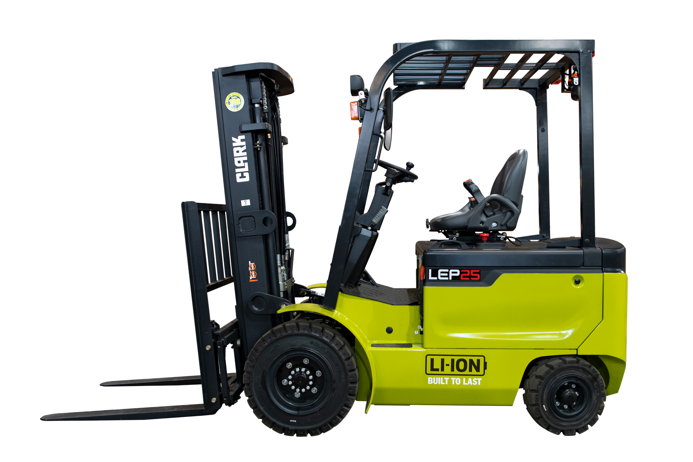

A empresa tinha dois tipos de empilhadeira: a elétrica para o galpão e a a combustão para o pátio. Dois frotas. Dois contratos de manutenção. Dois perfis de operador. Dois orçamentos de peças. E quando a demanda aumentava num lado, a máquina estava do outro lado errado.
A Clark LXE foi construída para acabar com esse problema.
Uma empilhadeira elétrica que opera no galpão e no pátio. Com performance de combustão e custo operacional de elétrica.
Empilhadeira Elétrica Clark LXE — Operação Mista Indoor e Outdoor, 2.500 a 3.500 kg
Empilhadeira elétrica 80V com bateria lítio-íon, capacidade de 2.500 a 3.500 kg, motor AC trifásico e operação mista para galpão e pátio externo. Ideal para centros de distribuição e operações mistas em Goiânia e Centro-Oeste.

Clark LXE — empilhadeira elétrica para operação mista, 80V Li-Ion, motor AC trifásico
Por que a Clark LXE Series?
Operação mista galpão e pátio: pneumáticos para externo, performance elétrica para interno — uma máquina resolve os dois ambientes
Motor 80V AC trifásico: aceleração e velocidade equivalentes a combustão — sem abrir mão de zero emissão
4 modos de operação H/S/E/T: ajuste de performance e consumo conforme o turno e a carga
Bateria Li-Ion até 460 Ah: recarga em 2 horas — sem troca de bateria entre turnos
Zero manutenção de bateria: sem água destilada, sem inspeção de células, sem custo oculto
80VTensão — motor AC trifásico de alta performance
460 AhCapacidade máxima de bateria — turno duplo
7.300 mmAltura máxima de elevação — torre Quadruplex
LXE25, LXE30 ou LXE35: o modelo certo para cada carga
A Clark LXE Series cobre de 2.500 a 3.500 kg com três modelos. O diferencial de configuração está na bateria — três capacidades disponíveis permitem ajustar a autonomia ao perfil de uso sem superdimensionar o equipamento.
Comparativo Clark LXE Series — Modelos, capacidades e baterias
Modelo
Capacidade
Tensão
Bateria disponível
Perfil de uso
Clark LXE25
2.500 kg
80V
230 / 346 Ah
CD com pátio pequeno, 1 turno
Clark LXE30
3.000 kg
80V
346 / 460 Ah
CD médio, operação mista intensa
Clark LXE35
3.500 kg
80V
460 Ah
Frigorífico com pátio, 2 turnos
Como escolher a bateria: 230 Ah cobre 1 turno padrão (8 horas) com folga. 346 Ah cobre 1,5 turno — ideal para operações com hora extra frequente. 460 Ah cobre 2 turnos completos sem recarga intermediária. Para configuração ideal, informe o número de turnos e a intensidade de ciclos ao solicitar proposta.
O modelo define a capacidade. O motor define a performance.
Motor 80V AC trifásico: por que isso importa na prática
A maioria das empilhadeiras elétricas de médio porte usa 48V ou 60V. A Clark LXE opera em 80V. Tensão mais alta significa menos corrente para entregar a mesma potência. Menos corrente significa menos calor nos cabos e motor. Menos calor significa mais eficiência e mais vida útil dos componentes elétricos.
O motor AC trifásico elimina as escovas de carvão que os motores DC usam para transferir corrente. Sem escovas, sem desgaste por atrito. A manutenção de motor em um elétrico convencional inclui troca de escovas a cada 1.500 horas. Na LXE, esse custo simplesmente não existe.
Mas o diferencial real aparece em movimento.
Os quatro modos de operação — H (Alta performance), S (Standard), E (Econômico) e T (Precisão) — permitem que o operador ajuste a resposta da máquina ao contexto. Modo H para descarga rápida de caminhão no pátio. Modo E para separação de pedidos no corredor estreito. Modo T para posicionamento preciso em racks altos.
Velocidade e gradeabilidade: A LXE Series atinge até 20 km/h em deslocamento — equivalente a empilhadeiras a GLP de mesma faixa. A gradeabilidade é adequada para rampas de acesso a docas, permitindo transição fluida entre o pátio e o galpão sem troca de máquina.
Motor 80V resolve a performance. A bateria resolve a continuidade da operação.
Bateria Li-Ion 80V: recarga em 2 horas, manutenção zero
A bateria lítio-íon da LXE Series usa tecnologia LiFePO4 — lítio ferro-fosfato. É o mesmo tipo de bateria usado em veículos elétricos industriais de alto ciclo. Vida útil de até 2.500 ciclos de carga — mais do dobro de baterias de chumbo-ácido convencionais.
Recarga completa em 2 horas com carregador de alta potência. Com o carregador on-board padrão e tomada 220V, a recarga é mais lenta — ideal para recarga noturna entre turnos. Para operações de 2 turnos com recarga rápida, recomenda-se o carregador externo de alta potência.
Zero manutenção não é força de expressão.
Bateria LiFePO4 não precisa de água destilada. Não precisa de inspeção de densidade de eletrólito. Não desenvolve sulfatação por descarga profunda. Não perde capacidade por recarga parcial. O operador carrega quando é conveniente — não quando o calendário manda.
Autonomia por configuração: Bateria 230 Ah: ~8 horas de operação padrão. Bateria 346 Ah: ~12 horas. Bateria 460 Ah: ~16 horas. Esses valores variam conforme intensidade de ciclos, modo de operação e condição do terreno.
Bateria e motor resolvidos. A ergonomia do operador é o próximo fator de produtividade.
Painel 4,3" e ergonomia: operador informado, operação controlada
O display LCD colorido de 4,3 polegadas exibe em tempo real: nível de bateria em percentual, horas de operação, temperatura do motor, modo ativo e alertas de manutenção. O operador não precisa adivinhar se a bateria aguenta o turno — vê o número.
O sensor de presença de operador é integrado ao assento. Quando o operador sai do assento, o sistema desativa automaticamente as funções hidráulicas e de direção. A máquina para de responder a comandos acidentais. Isso atende à NR-11 sem exigir nenhuma ação do operador — é o comportamento padrão.
Ergonomia não é conforto. É produtividade sustentada por um turno inteiro.
Coluna de direção inclinável facilita a entrada e saída — especialmente em operações de alto ciclo onde o operador sobe e desce da máquina dezenas de vezes por turno. Assento com suspensão reduz a fadiga em superfícies irregulares de pátio externo.
Operador bem posicionado, painel completo. Agora: onde a LXE opera melhor.
Onde a Clark LXE entrega mais resultado
A LXE foi desenvolvida especificamente para operações que não se encaixam em uma categoria: não são 100% indoor nem 100% outdoor. São o caso mais comum em centros de distribuição reais.
01Centro de distribuição com pátio e galpão
A LXE faz o ciclo completo: recebe o pallet no pátio, cruza a doca, posiciona no rack interno. Uma máquina, dois ambientes, sem troca de frota.
02Empresas em zona urbana com restrição de emissão
Municípios com leis de controle de emissões para operações industriais próximas a áreas residenciais. Zero emissão da LXE resolve a questão regulatória sem sacrificar performance.
03Frigoríficos com acesso externo
Operação interna a baixa temperatura, acesso externo via rampa de doca. A LXE opera nos dois ambientes. A bateria Li-Ion não perde eficiência nas câmaras frias.
04Operações em dois turnos sem troca de bateria
Com a bateria de 460 Ah, a LXE35 opera 2 turnos completos. A recarga acontece no período de parada entre turnos ou no período noturno.
Cenários de aplicação claros. A ficha técnica completa confirma as dimensões e limitações.
Especificações técnicas Clark LXE Series
Ficha técnica Clark LXE25 / LXE30 / LXE35
Parâmetro
LXE25
LXE30
LXE35
Capacidade nominal
2.500 kg
3.000 kg
3.500 kg
Tensão da bateria
80V
Tecnologia de bateria
Lítio-íon (LiFePO4)
Capacidade de bateria
230 / 346 Ah
346 / 460 Ah
460 Ah
Motor de tração
AC trifásico
Modos de operação
H (Alta), S (Standard), E (Econômico), T (Precisão)
Tempo de recarga
~2 horas (carregador externo alta potência)
Altura máxima de elevação
Até 7.300 mm (torre Quadruplex)
Display
LCD colorido 4,3 polegadas
Sensor de presença
Sim — desativa hidráulico e direção
Emissões
Zero
Operação
Indoor e outdoor (pneus pneumáticos)
Normas
NR-11, NR-12
Especificações confirmadas. O próximo passo é a proposta para sua operação em Goiânia.
Como comprar a Clark LXE em Goiânia e Centro-Oeste
A Move Máquinas é o canal oficial Clark para Goiânia e Centro-Oeste. A configuração da LXE — modelo, capacidade de bateria e tipo de torre — é definida em conjunto com o time técnico antes da proposta.
1Solicite proposta: informe o modelo, o número de turnos e o tipo de operação. Retorno em até 1 dia útil.
2Visita técnica: avaliamos o pátio, o galpão e o perfil de carga para configurar bateria e torre ideais.
3Proposta comercial: venda à vista, parcelamento ou locação com manutenção inclusa.
4Entrega e configuração: entrega com NF, manual em português e configuração dos modos de operação.
5Suporte pós-venda: mecânico em Goiânia em até 4 horas. Peças originais Clark em estoque.
Locação disponível: A Move Máquinas oferece locação mensal da Clark LXE Series com manutenção preventiva inclusa. Ideal para centros de distribuição que preferem custo operacional fixo e sem capital imobilizado.
Processo direto. As dúvidas mais comuns sobre a LXE estão respondidas abaixo.
A empresa que tinha duas frotas — elétrica para o galpão e combustão para o pátio — fez as contas. Dois contratos de manutenção, duas peças de reposição, duas categorias de treinamento. A Clark LXE consolidou tudo em uma máquina. No terceiro mês após a transição, o custo total de movimentação por tonelada havia caído 22%. O gestor de frota dormia melhor.
Perguntas frequentes sobre a Clark LXE
A Clark LXE realmente opera no pátio externo?
Sim. A LXE Series é equipada com pneus pneumáticos adequados para uso externo — calçada, pátio pavimentado e rampas de acesso a docas. Não é indicada para terreno irregular como cascalho ou terra batida (nesse caso, a linha a combustão Clark C ou S é mais adequada).
O que significa o modo T (Precisão)?
O modo T reduz a sensibilidade dos controles de direção e hidráulico, permitindo posicionamento fino de garfos em racks altos. É usado quando o operador precisa alinhar paletes em alturas acima de 4 metros, onde pequenos movimentos têm grande impacto no posicionamento.
Qual a diferença entre a LXE e a GEX?
A Clark GEX é focada em operação indoor com raio de giro ultra-compacto para corredores muito estreitos. A LXE é a opção para operação mista (indoor e outdoor), com pneus pneumáticos e tensão de 80V para performance equivalente a combustão em pátio. Para operação 100% indoor em corredor estreito, a GEX pode ser mais adequada.
A bateria Li-Ion da LXE pode ser substituída?
Sim. A bateria é modular — pode ser substituída ao fim da vida útil (2.500 ciclos) sem necessidade de troca da máquina inteira. O custo de substituição de bateria Li-Ion é significativamente menor que o custo de uma máquina nova.
Qual a altura máxima de elevação da LXE?
Até 7.300 mm com torre Quadruplex. A altura de elevação é configurável conforme a especificação do pedido. Para operações com racks acima de 6 metros, informe a altura necessária ao solicitar proposta para validar a configuração correta.
A Clark LXE atende a NR-11 e NR-12?
Sim. O sensor de presença de operador, o guarda-cabeça homologado e os sistemas de segurança integrados atendem integralmente à NR-11 e à NR-12. A documentação de conformidade é fornecida com a máquina.
Solicite proposta de compra — Clark LXE Series
Informe o modelo e o tipo de operação. A Move Máquinas configura a bateria ideal e retorna com proposta em até 1 dia útil para Goiânia e Centro-Oeste.